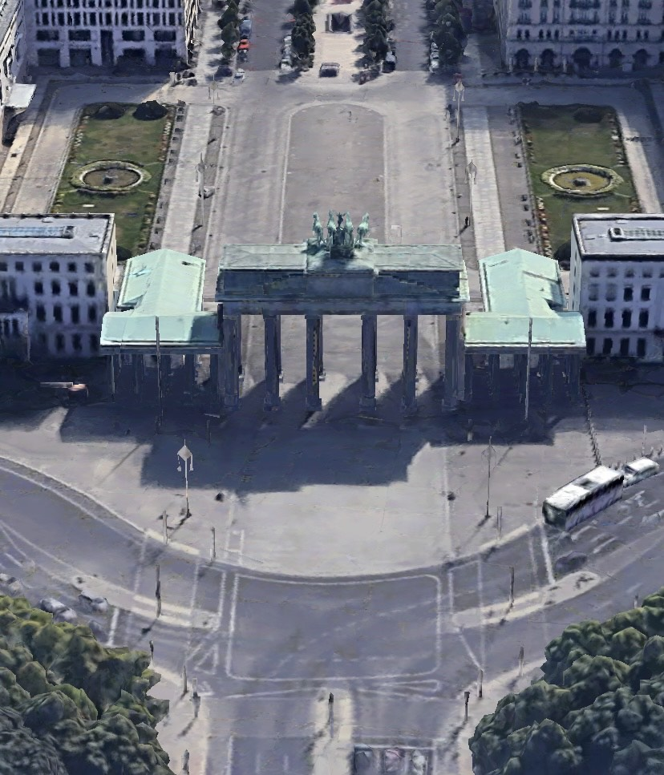

Brama Brandenburska (niem. Brandenburger Tor) – zabytkowa budowla w Berlinie, zaprojektowana przez niemieckiego architekta Carla Gottharda Langhansa. Budowano ją w latach 1788–1791. Jest jednym z charakterystycznych punktów miasta.
Budowana po wojnie siedmioletniej, w czasach umacniania się Królestwa Prus. W 1793 roku została wzbogacona kwadrygą, którą powoziła naga wówczas Wiktoria, bogini zwycięstwa uwieńczona dębowymi liśćmi. Pomalowana na biało budowla została wtedy nazwana Bramą Pokoju.
Brama Brandenburska jako symbol Pokoju i Wolności od 3 października 1990, w rocznicę zjednoczenia Niemiec, jest znowu w swej oryginalnej formie. Remont tej historycznej budowli trwał dwa lata.
Zabytek znajduje się na niemieckich rewersach monet 10, 20 i 50 eurocentów jako symbol zjednoczenia państwa niemieckiego.
Brama Brandenburska ma wysokość 26 m, szerokość 65,5 m i głębokość na 11 m. Zbudowano ją w stylu wczesnoklasycystycznym z piaskowca łabskiego (który wydobywała berlińska firma kamieniarska Zeidler & Wimmel) i piaskowca z okolic Lwówka Śląskiego. Została ukształtowana na wzór propylei akropolu ateńskiego. W bramie jest pięć przejazdów, z których środkowy jest odrobinę szerszy od innych i dwie przybudówki. Po obu stronach Bramy znajduje się po sześć kolumn o wysokości 15. metrów w stylu doryckim z jońskim rowkowaniem. Bazy kolumn mają średnice 1,75 m. Attyka i filary dzielące przejazdy są pokryte reliefami, które przedstawiają m.in. czyny Herkulesa. W obu przybudówkach stoją wielkie posągi przedstawiające Marsa, chowającego miecz do pochwy i boginię Minerwę z lancą. Modele obu rzeźb zostały wykonane przez Johanna Gotfryda Schadowa w 1792 r. Mars został wykonany przez Carla Friedericha Wichmanna, a Minerwa – Johana Daniela Metzlera. Figury zostały zniszczone podczas II wojny światowej i zastąpiono je w latach 1951–1952 kopiami wykonanymi przez zespół rzeźbiarski Kranolda.